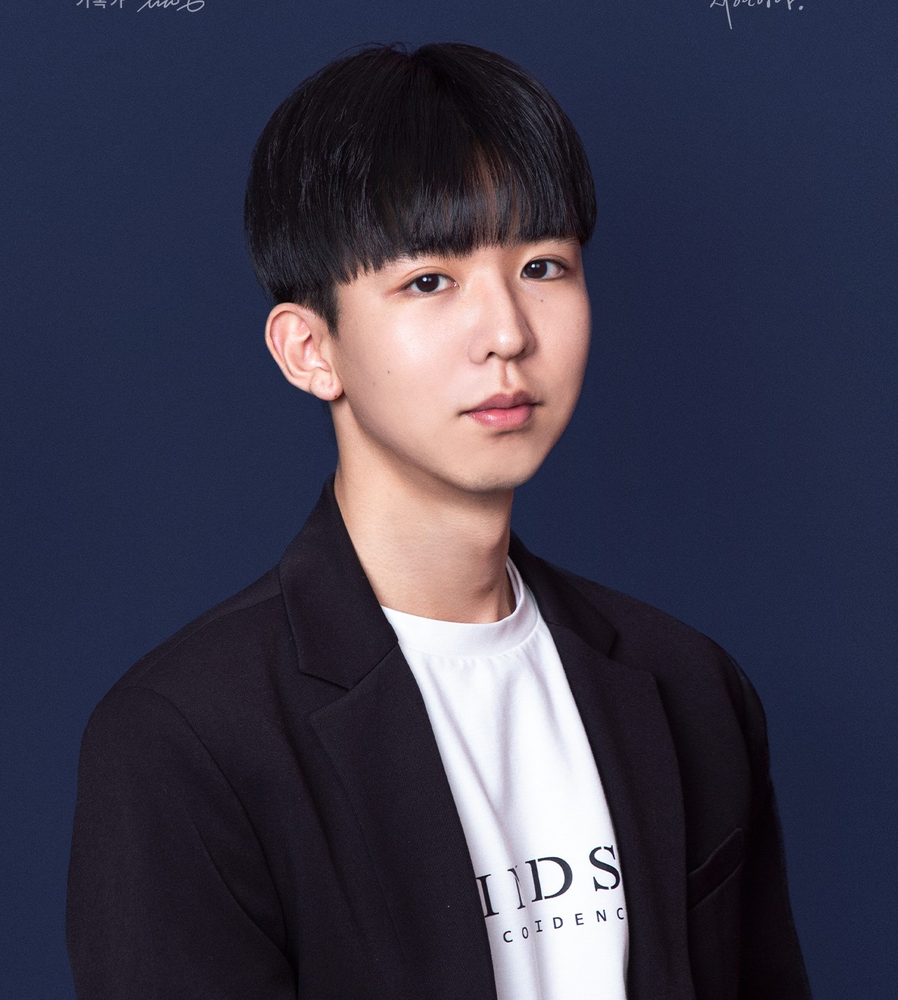

SIA Lab
Apr. 2026 – PresentResearch & Project Associate · Korea University
Research Area
Research Projects
- Explored foundation model-based and meta-learning-based approaches for RUL prediction across heterogeneous equipment domains.
Reliable Machine Learning & Optimization-aware AI
Korea University · Industrial & Management Engineering
I build trustworthy and efficient AI methods for structured data and operational decision-making — spanning anomaly detection, robust predictive modeling, and optimization-informed learning for real-world industrial systems.

I am SeonHo Yoo, an industrial AI researcher at Korea University focusing on reliable machine learning, anomaly detection, and optimization-informed multi-agent AI for real-world industrial systems.
My research aims to develop trustworthy and efficient AI methods for structured data and operational decision-making problems.
Anomaly Detection & Robust Predictive Modeling
Optimization-aware Learning & Decision-making
AI for Operations & Industrial Systems
Data-centric Methods for Real-world Applications
Research positions across industrial AI, graph-based reasoning, and optimization.
Research & Project Associate · Korea University
Research Area
Research Projects
Research Intern · Seoul National University
Research Area
Research Projects
Research Intern · Korea University
Research Area
Research Projects
Integrated M.S./Ph.D. in Industrial & Management Engineering
B.S. in Industrial & Management Engineering
Publications, presentations, competitions, and honors.
Domestic
Domestic
Domestic
Open to research collaborations, discussions on industrial AI, and graduate-level opportunities. The fastest way to reach me is by email.
References available on request.